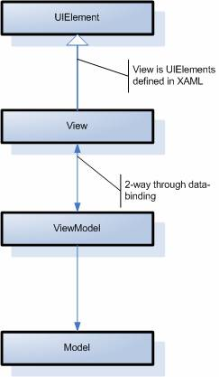

O MVVM é um pattern que foi criado em 2005, por John Gossman, que assemelha-se em alguns aspectos o MVC (Model View Controller) e ao MVP (Model View Presenter), podemos até dizer que o MVVM é uma especialização do MVP adaptado para a arquitetura do WPF E Silverlight. Conceitualmente, o MVVM e o MVP são idênticos, o que os diferencia é que o MVVM é específico para a arquitetura do WPF e Silverlight e o MVP é independente de plataforma.
O MVVM, visa estabelecer uma clara separação de responsabilidades em uma aplicação WPF e Silverlight, mantendo uma espécie de façade entre o Modelo de objetos ( entenda classes de negócio, serviços externos e até mesmo acesso a banco de dados ) e a View que é a interface, com a qual o usuário interage. Para entendermos melhor, como se dá esta separação e visualizar como os componentes interagem dentro deste cenário, observe a figura abaixo:
Como ilustra a figura acima, há uma clara separação das camadas. A camada Model (Modelo) não conhece a View (Camada de apresentação) e vice-versa, na verdade a View conhece a ViewModel e se comunica com ela através do mecanismo de binding.
Sendo assim, em uma aplicação Android que faz o uso do padrão MVVM, por exemplo, nós temos o seguinte diagrama: